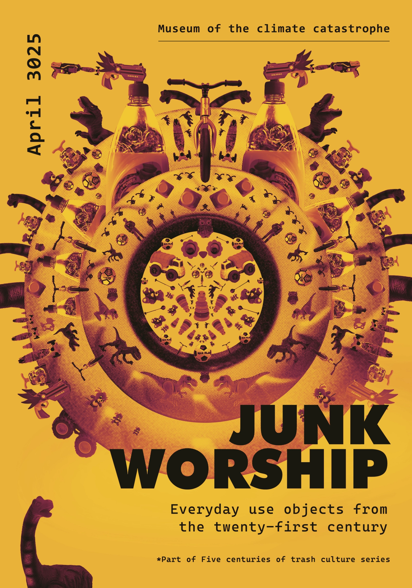
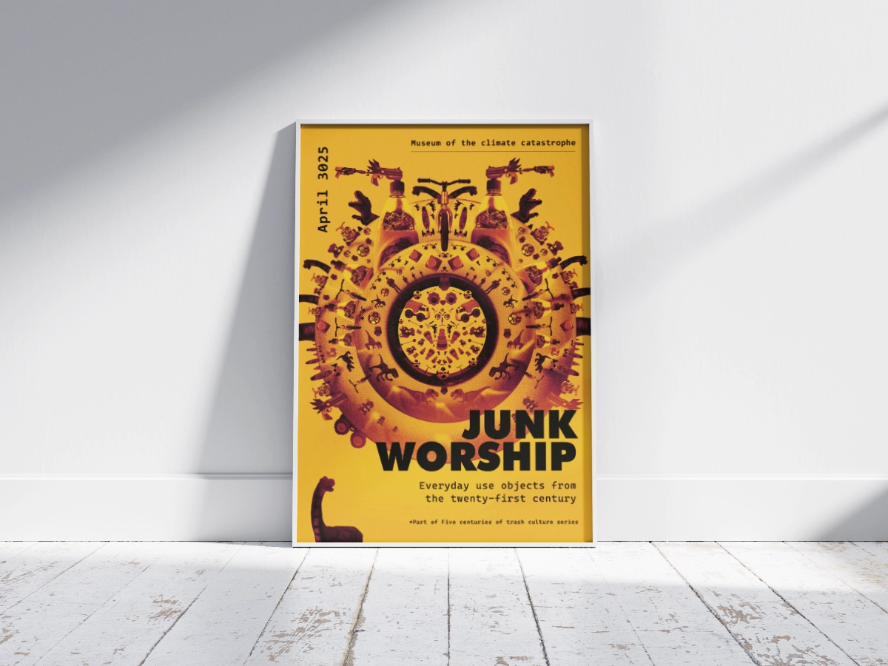
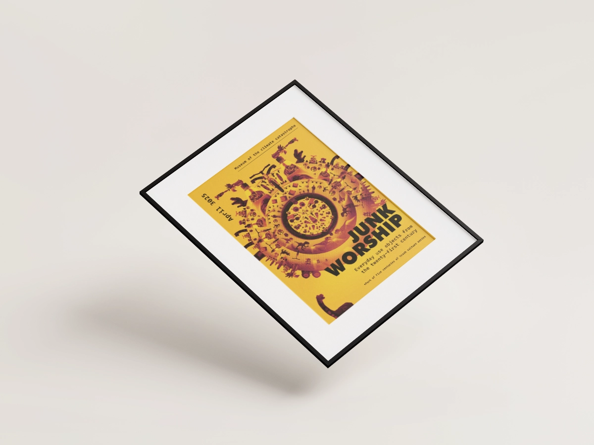
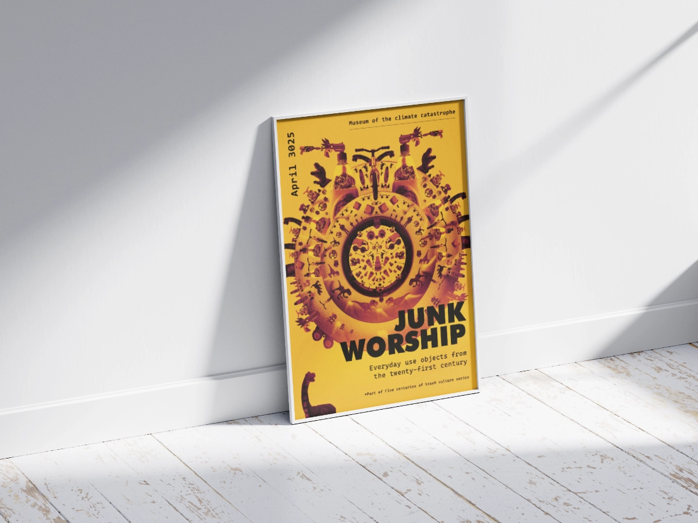
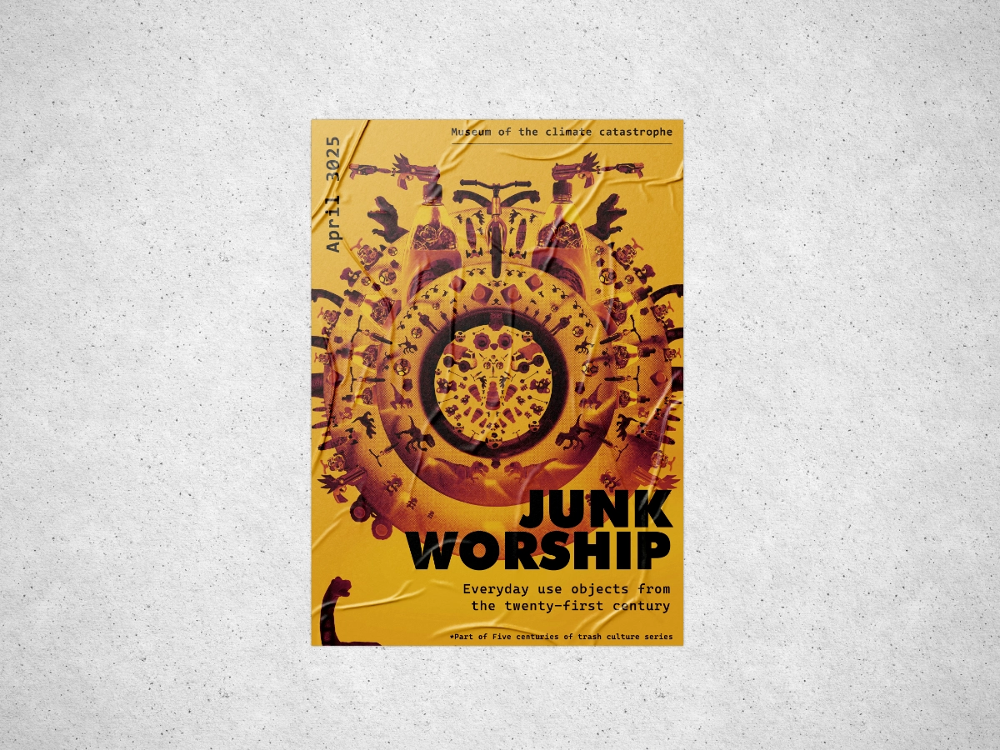

The poster focuses on the theme of environmental decay caused by consumerism even at the earliest age of human life.
For the purpose of the design, I photographed the used packaging and many of my son's toys to highlight the issue of waste and overconsumption.



